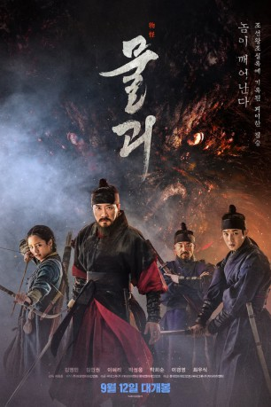

#11170 Monstrum
 
 IMDB-Wertung: 5.9 / 10
IMDB-Wertung: 5.9 / 10  Metascore: 0
Metascore: 0 
Anfang des 16. Jahrhunderts wütet die Pest in Korea - besonders stark betroffen ist die Region um den Berg Ingwansan. Neben der Tod bringenden Seuche muss die Bevölkerung auch eine blutrünstige Bestie fürchten, die sich in der rauen Gebirgslandschaft auf Menschenjagd befinden soll. Als Berichte davon zum Hof von König Jungjong vordringen, schickt dieser seinen Elitesoldaten Jin Yong gemeinsam mit dem erfahrenen Offizier Yoon Gyeom und der geheimnisvollen Myung in die Provinz, um das Monstrum zu jagen und zu töten. Endet das Spezialkommando als Frischfleisch für die Bestie?
Jahr: 2018
Dauer: 105 Minuten
FSK: 16
Land: Süd-Korea Studio: Koch MediaTonspuren:
Untertitel: Deutsch,
Auflösung: 1080p (1920x1040) Größe: 6625 MB
Genre: Action, Horror, Fantasy, Mystery
Regisseur: Jong-ho Huh
Drehbuch: Jeong-uk Byeon, Heo-dam, Heo-dam, Jong-ho Huh
Soundtrack: Mowg
Darsteller:
- Myung-Min Kim als Yoon Gyeom
 In-kwon Kim als Sung Han
In-kwon Kim als Sung Han- Woo-sik Choi als Heo
- Sung-woong Park als Jin Yong
- Hee-soon Park als King Jungjong
 Kyeong-yeong Lee als Sim Woon
Kyeong-yeong Lee als Sim Woon- Hyeri Lee als Myung
- Kyu-bok Lee als Mo-gae
- Won-hee Jo als High ranking government officer
- Joon-Bum Kim als Peddler 1
- Min-Seok Kim als
- Min-soo Sung als Government post Sangsun
- Hee-Myoung Yang als Peddler 1
- Byeong-hee Yoon als Eunuch 1
Datei: X:\HD-Eastern-Classic(A-M)\Monstrum (2018, FSK16, 1920x1040).mkv seit 01.05.2019
Festplatte: HD Eastern+Western
 Es gibt insgesamt 63 Filme in der Gruppe 'HD-Eastern-Classic(A-M)'
Es gibt insgesamt 63 Filme in der Gruppe 'HD-Eastern-Classic(A-M)'